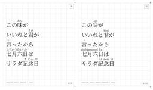

フロントエンド・デザイン直近7日・スコア順
このトピックだけを購読する: RSS

無料オープンソースオフィススイート「ibisOffice」をibisPaint開発元がリリース、ブラウザまたはWindows・Mac版アプリでWord・Excel・PowerPointファイルの閲覧と編集が可能 11
11 GIGAZINE
GIGAZINE
はてブ11 · 新しく出た
フロントエンド・デザイン
基本無料のイラスト制作アプリ「アイビスペイント(ibisPaint)」で知られるibisWorksが、Microsoft Officeファイル形式を編集できる無料オープンソースオフィススイート「ibisOffice」をリリースしました。
4時間前

漢字の上にふりがなを表示する日本語フォント「Furifont」オープンライセンスで公開 | gihyo.jp 132
はてブ132
gihyo.jp（はてな IT人気）
フロントエンド・デザイン
OSS開発者のAnthony Fu氏は2026年10月15日、漢字の上にふりがな（かな文字またはローマ字）を表示するフォント「Furifont」を製作、オープンなライセンスで公開した
1日前

tsc-ts: TypeScript written in TypeScript 2 github.com（Hacker News）
github.com（Hacker News）
HN 6pt
フロントエンド・デザイン
TypeScript written in TypeScript. Contribute to vercel-labs/tsc-ts development by creating an account on GitHub.
1時間前

メモリ8GBでもWindowsがキビキビ動作！この秋の「Windows 11」は改善が盛りだくさん／マイクロソフトが改善点を解説、検索、スマホ連携、フォト、ゲーミング、ペン・触覚対応、アクセシビリティまで 18窓の杜
はてブ18 · 数字のインパクト
フロントエンド・デザイン
米Microsoftは10月15日（現地時間）、「Windows 11」の最近の改善と今後の改善予定を、公式ブログ「Windows Experience Blog」で発表した。同社は今年になってOSの“作りこみ”に注力しているが、その手が緩むことはないようだ。
2日前

Designing more efficient quantum circuits with Claude Anthropic Research
Anthropic Research
AI・LLM · フロントエンド・デザイン · サイエンス
AI・LLM / フロントエンド・デザイン / サイエンス
Working largely on its own, Claude designed quantum circuits that improve on the best published versions, in some cases by an order of magnitude or more.
2日前

macOSでウインドウがたくさん表示されていてもワンクリックで目的のウインドウを手前にできるアプリ -Tungsten Edge 3 コリス
コリス
はてブ3
フロントエンド・デザイン
macOSでウインドウを切り替えるとき、どのようにしていますか？ もちろん、そのウインドウをクリックすれば手前に表示されますが、重なっていると困難です。Dockでアプリのアイコンをクリックしても、その
3日前

Amazonで年に一度のプライム感謝祭2026が開催！ 絶対に見逃せないお買い得品を紹介します コリス
フロントエンド・デザイン
フロントエンド・デザイン
※本ページは、アフィリエイト広告を利用しています。 いよいよ、年に一度の「プライム感謝祭2026」が開催です！ プライム会員限定のセールということで、通常のセールよりもかなり安くなっており、非常にお買
2日前

NAB Show 2026 参加記 DMM Developers Blog
DMM Developers Blog
AI・LLM · フロントエンド・デザイン
AI・LLM / フロントエンド・デザイン
はじめに 配信基盤の最前線 MoQ(Media over QUIC) ── 次世代の配信トランスポート AIエンコード前処理でビットレートを30〜50%削減 AIによるパーソナライズとUX(Synamedia/Mileto) AIによる海賊版・CDNリーチング対策(Catching the Invisible) ライブ体験の未来: From Cameras to Code スポーツ配信とファンエンゲージメント(Peacockのマルチビュー) 配信ビジネス・プラットフォーム戦略 グローバル規模のストリーミングプラットフォーム運用 配信パートナーシップ(Roku/Amazon/NBCUnivers…
5日前